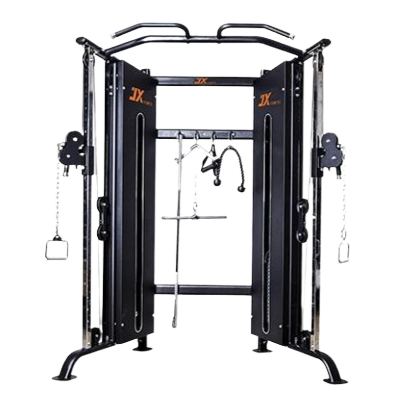

케이블 크로스오버
- 케이블 머신의 양쪽에 있는 핸들을 적절한 높이로 조정한다. 일반적으로 손잡이는 가슴 높이에서 시작한다.
- 각 손에 핸들을 잡고, 양 발은 어깨 너비만큼 벌리고, 한 발은 약간 앞에 두어 안정된 자세를 취한다. 몸의 중심을 잘 잡고, 팔꿈치를 약간 구부린 상태로 유지한다.
- 손잡이를 가슴 중앙 쪽으로 천천히 모으며, 팔꿈치를 가슴 쪽으로 당깁니다. 가슴 근육을 수축시킨다.
- 이때 호흡은 뱉는다.
- 양팔을 넓게 벌리며 손잡이를 몸 옆으로 뒤로 뻗는다. 이때 가슴 근육이 늘어나는 것을 느끼면서, 팔꿈치를 살짝 구부린 상태를 유지한다.
- 이때 호흡은 마신다.
주의사항
- 팔꿈치는 너무 펴지 않도록 하고, 어깨가 올라오지 않도록 주의한다.
- 운동 중 상체가 흔들리지 않도록 주의하고, 중심을 잘 잡아 안정적인 자세를 유지한다.
- 지나치게 무거운 중량은 잘못된 자세를 유발할 수 있어 부상의 원인이 된다.
운동부위 및 효과
- 대흉근, 소흉근, 삼각근, 삼두근, 코어근육
- 가슴 전체를 고르게 발달시켜 탄탄한 가슴을 만드는 데 도움을 준다. 특히 가슴의 외측 근육과 중앙을 강화하는 데 효과적이다.